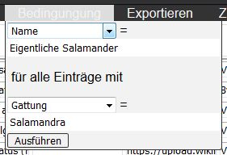

In der Bildanzeige wird ein zufälliges Bild eines Lebewesens aus einer vorgefertigten Liste angezeigt, bei Klick auf das Bild wird der Name und weitere Informationen über das abgebildete Lebewesen angezeigt. Klickt man am unteren Ende der Informationsanzeige, so wird das Bild in dieser Runde kein weiteres mal wiederholt und das nächste zufällige Bild aus den in dieser Runde verbleibenden Bildern aus der Liste angezeigt. Es empfiehlt sich diesen Button zu wählen wenn man das Lebewesen am Bild richtig erkannt hat. Wählt man so wird das Bild in dieser Runde erneut angezeigt werden.
Um die Liste aus welcher die Bilder und Informationen der Bildanzeige gewählt werden anzuzeigen und zu bearbeiten im Menü am oberen Rand der Bildanzeige oder Hilfe "Liste bearbeiten" klicken.
Möchte man eine eigene Liste welche als .json Datei vorliegt verwenden so kann man diese unter "Eigene Liste" ⇢ "Durchsuchen" im Menü am oberen Rand der Bildanzeige oder Liste wählen. Bei Listen aus nicht vertrauenswürdigen Quellen sollte die Sicherheitshinweise beachtet werden. Durch das öffnen einer neuen Liste wird die derzeit geöffnete Liste verworfen, um Datenverlust zu vermeiden sollte die derzeit geöffnete Liste davor exportiert werden.
Um wieder die Standardliste der Website zu verwenden im Menü am oberen Rand der Bildanzeige oder Liste "Zurücksetzen ×" wählen. ("Zurücksetzen ×" wird nicht angezeigt wenn bereits die Standardliste verwendet wird.) Durch das öffnen der Standardliste wird die derzeit geöffnete Liste verworfen, um Datenverlust zu vermeiden sollte die derzeit geöffnete Liste davor exportiert werden.
Im Menü am oberen Rand der Bildanzeige "Filter" wählen. Nun den Namen der gewünschten Gruppe eingeben und den entsprechenden Eintrag durch Klick aus den Vorschlägen wählen. Es werden nun nur noch Bilder angezeigt die der gewählten Gruppe angehören. Es ist möglich nach ID#, Name, Gruppe und den Taxa der Systematik der Biologie zu Filtern.
Im Menü am oberen Rand der Bildanzeige "Filter" wählen. Durch Klick auf den angewandten Filter im Dialogfeld kann dieser entfernt werden.
Die Prozentanzeige links unten in der Bildanzeige drückt das Verhältnis zwischen gewussten und nicht gewussten Einträgen in Prozent gewusster Einträge aus. Zum zurücksetzen dieses Zählers auf die Prozentzahl klicken.
Die Nummer rechts unten in der Bildanzeige ist die ID# dieses Eintrages in der Liste. Dies sollte das auffinden eines in der Bilderanzeige als fehlerhaft erkannten Eintrages in der Liste erleichtern.
Charles Darwin wird in der Bildanzeige angezeigt wenn für einen Eintrag in der Liste keine Grafikadresse/Bildadresse vorhanden ist. Um dieses Problem zu beheben für den entsprechenden Eintrag in der Liste eine Grafikadresse/Bildadresse im Feld Grafik-/Bildadresse angeben oder den Eintrag löschen. Die ID# des zu bearbeitenden Eintrages ist im Bilduntertext und rechts unten in der Bildanzeige angegeben.
Carl von Linné wird in der Bildanzeige angezeigt wenn für einen Eintrag in der Liste kein Bild geladen werden kann. Dies kann der Fall sein wenn das Bild unter der angegebenen Grafikadresse/Bildadresse nicht mehr existiert, die Grafikadresse/Bildadresse fehlerhaft ist oder die Internetverbindung unterbrochen ist. Um die beiden erstgenannten Probleme zu beheben für den entsprechenden Eintrag in der Liste eine gültige Grafikadresse/Bildadresse im Feld Grafik-/Bildadresse angeben oder den Eintrag löschen. Die ID# des zu bearbeitenden Eintrages ist im Bilduntertext und rechts unten in der Bildanzeige angegeben.
Wenn der Betreiber der Seite der im Feld Grafik-/Bildadresse angegebenen Grafikadresse/Bildadresse ein anderes Bild unter dieser Grafikadresse/Bildadresse speichert wird dieses in der Bildanzeige angezeigt. Um dieses Problem zu beheben für den entsprechenden Eintrag in der Liste die neue Grafikadresse/Bildadresse des Bildes im Feld Grafik-/Bildadresse angeben wenn diese bekannt ist/existiert oder den Eintrag löschen. Die ID# des zu bearbeitenden Eintrages ist rechts unten in der Bildanzeige angegeben.
Jede Zeile der Liste ist ein Eintrag und enspricht einem Bild der Bildanzeige. Die Liste kann hier nach belieben individuell verändert werden. Es ist nicht notwendig/möglich eigene Bilder hochzuladen, stattdessen können theoretisch alle im Internet verfügbaren Bilder über die Grafikadresse/Bildadresse verwendet werden. Die Grafikadresse/Bildadresse ist ein Link direkt zum Bild und wird im Feld Grafik-/Bildadresse eingetragen. Die Grafikadresse/Bildadresse eines Bildes erhält man indem man das Bild im Internetbrowser öffnet und mit Rechtsklick ⇢ Grafikadresse kopieren (Firefox)/Bildadresse kopieren (Chrome und Opera) die Grafikadresse/Bildadresse kopiert und in der Liste bei entsprechendem Eintrag im Feld Grafik-/Bildadresse einfügt. Zur ordnungsgemäßen Funktion der Seite muss dieses Feld ausgefüllt werden, da sonst kein Bild für diesen Eintrag in der Bildanzeige angezeigt werden kann. Alle anderen Felder sind optional und können leer gelassen werden. Diese werden als weitere Information angezeigt sobald in der Bildanzeige auf das Bild geklickt wird. Es ist allerdings sinnvoll zumindest eins dieser Felder auszufüllen um dem Prinzip der Bildanzeige folgen zu können.
Alle Veränderungen betreffen nur das Gerät auf dem die Veränderungen vorgenommen wurden und werden beim verlassen der Seite automatisch gespeichert. ACHTUNG: Wird der lokale Speicher des Internetbrowsers bereinigt oder eine andere Liste geöffnet, so gehen auch alle individuellen Veränderungen verloren. Auch ein Absturz des Internetbrowsers kann zu Datenverlust führen. Um einen derartigen Verlust einer individuelle Liste zu verhindern oder diese anderen Personen zur Verfügung zu stellen oder diese auf einem anderen Gerät zu verwenden, so muss man die Liste exportieren und kann die dadurch erstellte .json Datei nun über "Eigene Liste" oder "Liste hinzufügen" im Menü am oberen Rand der Liste öffnen.
Um alle Einträge der Liste zu löschen "Neue Liste" im Menü am oberen Rand der Liste klicken. Durch das öffnen einer neuen Liste wird die derzeit geöffnete Liste verworfen, um Datenverlust zu vermeiden sollte die derzeit geöffnete Liste davor exportiert werden.
Um zwei Listen zusammenzufügen "Liste hinzufügen" im Menü am oberen Rand der Liste klicken und die .json Datei der hinzuzufügenden Liste wählen um diese Liste an die bereits geöffnete Liste anzufügen. Für die Einträge der hinzugefügten Liste wird die ID# entsprechend der bereits geöffneten Liste angepasst. Bei Listen aus nicht vertrauenswürdigen Quellen sollte die Sicherheitshinweise beachtet werden.
Um mehrere Einträge auf einmal zu bearbeiten "Bedingung" im Menü am oberen Rand der Liste klicken. Im Dialogfeld in der oberen Ausklappauswahl die zu verändernde Spalte (z.B. "Gattung") wählen und im oberen Eingabefeld direkt darunter den Neuen Wert (z.B. "Eigentliche Salamander") für diese eintragen. In der unteren Ausklapppauswahl und dem unteren Eingabefeld angeben für welche Einträge diese Veränderung vorgenommen werden sollte (z.B. "Gattung" und "Salamandra").
Abb.: In diesem Beispiel würde für alle Einträge mit Gattungsname "Salamandra" der Gattungsname auf "Eigentliche Salamander" geändert.
Um eine individuelle Liste als Datei zu speichern "Exportieren" im Menü am oberen Rand der Liste wählen. Die Datei wird nun als Download "BioQuis_Liste.json" gespeichert.
JSON steht für JavaScript Object Notation. Dabei handelt es sich um ein weit verbreitetes Datenformat in Textform. Der Vorteil dieses Formates liegt in diesem Fall darin das es mit jedem beliebigen Texteditor geöffnet und so auch von Menschen gelesen werden kann. Es gibt in jeder gängigen Programmiersprache Parser um JSON Dateien zu lesen, was zumindest theoretisch die Möglichkeit der Weiterverarbeitung der Liste mit anderen Programmen offen lässt. (JSON in Wikipedia.)
Die durch "Exportieren" im Menü am oberen Rand der Liste erstellte .json Datei kann mit jedem herkömmlichen Texteditor geöffnet und eingesehen werden. Die Datei beinhaltet ein Objekt mit folgenden Eigenschaften:
| Eigenschaft | Erklärung |
|---|---|
| dv | Die Dateiversion dieser Datei. |
| Id1 & Id2 | Identifikationsnummer der Liste zur Unterscheidung verschiedener Listen. |
| v | Versionsnummer der Datei, erhöht sich mit jedem erneuten Exportieren um +1. |
| Date | Der Erstellungszeitpunkt der Datei in UTC. |
| Maxid | Die höchste ID# in der Liste. |
| Tiere | Die Liste als Array von Einträgen als Objekte. |
Um die Liste nach einer Spalte aufsteigend numerisch/alphabetisch zu sortieren klicke auf den Namen der Spalte am oberen Rand der Liste.
Um Einträge in der Liste zu verändern in das zu verändernde Feld klicken und die Änderung vornehmen.
Der Wert des ID# Feldes ist eine automatisch generierte, in der Liste einmalige Nummer um Einträge eindeutig idendifizieren zu können. Der Wert dieses Feldes kann nicht verändert werden um die Einmaligkeit der Nummer sicherzustellen.
Dieses Feld muss die Adresse einer Grafikdatei im Internet beinhalten. Die Grafikadresse/Bildadresse führt zu dem Bild welches in der Bilderanzeige angezeigt wird. Die Grafikadresse/Bildadresse eines Bildes erhält man indem man das Bild im Internetbrowser öffnet und mit Rechtsklick -> Grafikadresse kopieren (Firefox)/Bildadresse kopieren (Chrome und Opera) die Grafikadresse/Bildadresse kopiert und in der Liste bei entsprechendem Eintrag im Feld Grafik-/Bildadresse einfügt.
Diese Felder können bei Bedarf ausgefüllt werden. Diesen Spalten in der Liste ermöglichen das Eintragen von Einteilungen welche durch die Felder der Biologischen Systematik nicht abgedeckt sind. Es kann hier zum Beispiel der deutschen Namen und eine Gruppe von nur morphologisch ähnlichen Tieren (z.B. die Fische) eingetragen werden
Dieses Feld kann bei Bedarf ausgefüllt werden. Diese Spalte in der Liste ermöglicht die Angabe eines oder mehrerer Links zu einer beliebigen Internetseite mit weiteren Informationen, zum Beispiel zum Wikipedia Artikel des Lebewesens. Hier bitte nur eine gültige Webadresse angeben. Mehrere Links müssen zur korrekten Anzeige durch "[Leerzeichen]&[Leerzeichen]" getrennt werden, zum Beispiel: "https://de.wikipedia.org/wiki/Feuersalamander & https://de.wikipedia.org/wiki/Salamander".
Diese Felder können bei Bedarf ausgefüllt werden. Diesen Spalten in der Liste ermöglichen die Einteilung in die Systematik der Lebewesen. Es ist das in der Biologie gängige Konzept zur Einteilung, Benennung und Identifikation der Lebewesen. Mehr zur Systematik auf Wikipedia.
Um einen Eintrag aus der Liste zu löschen am Anfang der entsprechenden Zeile links neben dem ID# Feld den Button klicken.
Um einen Eintrag zur Liste hinzuzufügen am Anfang der Zeile unter welcher eine neue Zeile hinzugefügt werden sollte links neben dem ID# Feld den Button klicken. In die neue Zeile werden automatisch alle Felder mit Ausnahme des ID# Feldes und des Grafik-/Bildadresse Feldes von der Zeile darüber kopiert.
Generell werden alle Veränderungen automatisch gespeichert und sind auch nach dem Neustart des Internetbrowsers und bei einem späteren Aufruf der Seite wieder verfügbar. ACHTUNG: Wird der lokale Speicher des Internetbrowsers bereinigt (z.B. im privaten Modus oder nach manueller Bereinigung) oder eine andere Liste geöffnet, so gehen auch alle individuellen Veränderungen verloren. Auch ein Absturz des Internetbrowsers kann zu Datenverlust führen. Um einen derartigen Verlust einer individuelle Liste zu verhindern oder diese anderen Personen zur Verfügung zu stellen oder diese auf einem anderen Gerät zu verwenden, so muss man die Liste exportieren und kann die dadurch erstellte .json Datei nun über "Eigene Liste" oder "Liste hinzufügen" im Menü am oberen Rand der Liste öffnen.
Um zur Bildanzeige zu wechseln "Bildanzeige" im Menü am oberen Rand der Liste oder Hilfe klicken.
Exportiere die Datei trotz der automatischen Speicherung nach größeren Änderungen und vor allem bevor du den Internetbrowser bereinigst. Außerdem besteht die Möglichkeit die gesamte Website unter https://github.com/BioQuis/BioQuis.github.io downzuloaden um sie lokal zu nutzen. Dazu alle Dateien downloaden und in einem Ordner speichern und die Datei "index.html" mit einem Internetbrowser öffnen, es öffnet sich die Bildanzeige. So kann die Seite und mühvoll erstellte eigene Listen auch ohne Internetverbindung oder falls die Seite im Internet nicht mehr verfügbar ist weiter genutzt werden.
Die Verwendung des Codes ist nur zu nicht kommerziellen, privaten Zwecken lokal auf dem eigenen Computer gestattet.
Nein! Eine .json Datei kann generell beliebiegen Inhalt in Textform beinhalten. Dies können nicht nur anstößige oder ärgerliche Schriftstücke sein, sondern auch Programm-Skripte. Es ist zwar derzeit keine Möglichkeit bekannt ein über die BioQuis Seite lauffähiges Programm-Skript in eine .json Datei zu inklutieren, aber trotzdem kann dies dadurch nicht mit letzter Sicherheit ausgeschlossen werden. Es ist jedenfalls möglich mit einer .json Datei unerwünschte Links, Bilder und Texte auf der BioQuis Seite anzuzeigen, weshalb empfohlen wird nur .json Dateien aus vertrauenswürdigen Quellen zu verwenden. Um den Inhalt einer .json Datei vorweg zu überprüfen kann diese mit jedem gewöhlichen Texteditor geöffnet werden. Entspricht die Datei nicht dem vorgesehenen Muster sollte sie jedenfalls nicht verwendet werden. Zum Abgleich der verdächtigen Liste kann auch die Standardliste von BioQuis exportiert und als Muster verwendet werden.
Ist dir eine Sicherheitslücke von BioQuis bekannt? Nimm bitte Kontakt auf.
Internet Explorer besitzt leider nicht die für die Funktion dieser Seite erforderlichen Fähigkeiten. Der weltweite Marktanteil des Internet Explorer liegt derzeit bei etwa 3-5% und die Weiterentwicklung von Internet Explorer wurde zugunsten von Microsoft Edge eingestellt. Da eine Kompatibilität der Seite mit Internet Explorer nur zu verhältnissmäßig hohen Kosten möglich wäre wurde darauf verzichtet. Die Seite kann mit allen anderen gängigen Browsern verwendet werden.
Erzähl den Menschen von dieser Seite! Umso bessere Kenntnis über unsere Umwelt in der Bevölkerung herrscht, desto größer ist die Bereitschaft diese auch zu bewahren!
Du kannst die Standardliste der Website erweitern! Schicke deine Liste als Erweiterung der Standardliste an bioquis@tuta.io. Um die Standardliste um deine Liste erweitern zu können sollte sie bitte folgende Kriterien erfüllen:
Eine Quelle für Bilder die diese Kriterien erfüllt ist beispielsweise Wikimedia Commons. Informationen über die Klassifikation und Trivialnamen von Tieren finden sich beispeilsweise auf Wikipedia und Fauna Europaea.
Elementare Programmierkenntnisse sind vorhanden! Du kannst den Sourcecode der Seite auf https://github.com/BioQuis/BioQuis.github.io einsehen/downloaden und das Design verbessern oder die Funktionalität erweitern. Aber bevor du anfängst, bitte nimm Kontakt auf um unnötige Anstrengungen zu vermeiden.
Du weißt nicht mehr wohin mit dem ganzen Geld? Immer her damit! Eine finanzielle Förderung könnte die Website auf ein stabileres Fundament stellen und/oder die Funktionalität erweitern. Bitte nimm Kontakt auf.
{kind=link}